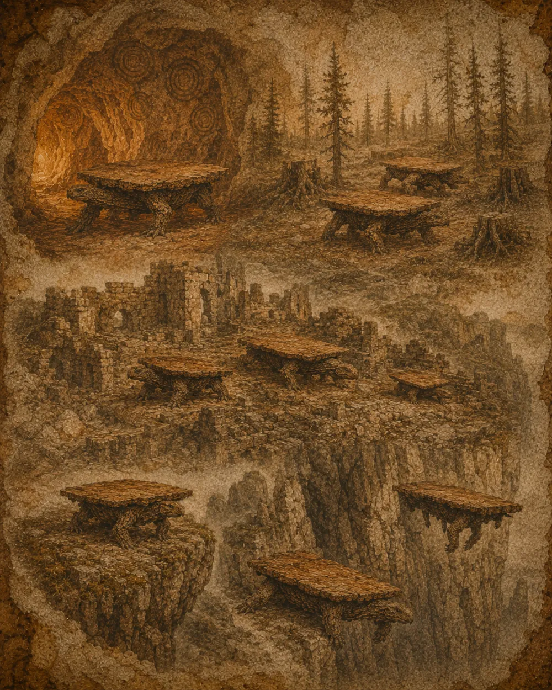

Territoire
Habitat
La table vivante privilégie les grandes étendues planes, assez fermes pour porter le poids de son plateau.

Des plaines à perte de vue
On la rencontre sur les steppes, les plateaux calcaires et les anciens parquets fossilisés. Elle a besoin d’espace pour déployer ses rallonges et d’un sol stable pour ne pas s’enfoncer.
Le troupeau se regroupe autour d’un point d’eau — ou, dans les régions arides, autour d’un dessous-de-verre abandonné dont il absorbe l’humidité par capillarité.
Le réfectoire nocturne
La nuit, les tables se rangent : flanc contre flanc, plateaux alignés, formant de longues rangées défensives que les naturalistes nomment réfectoires. Au lever du jour, elles se dispersent à nouveau dans la brume.
« Ce que l’on prend pour un meuble immobile n’est qu’une bête qui a appris à attendre. »